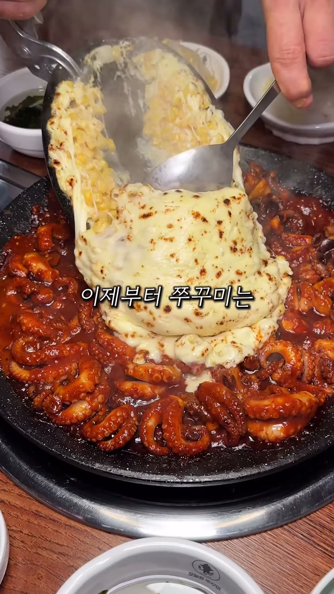
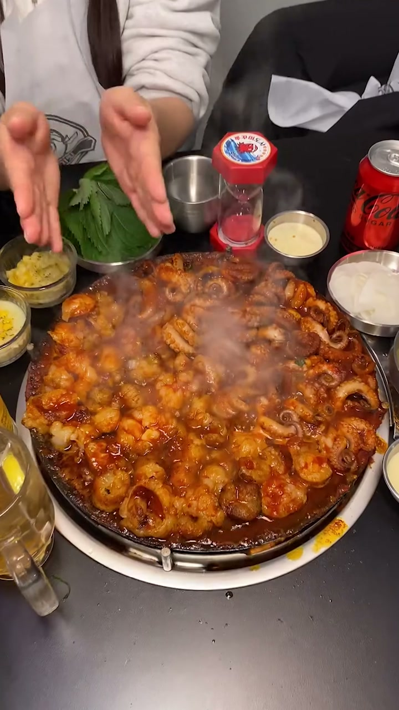
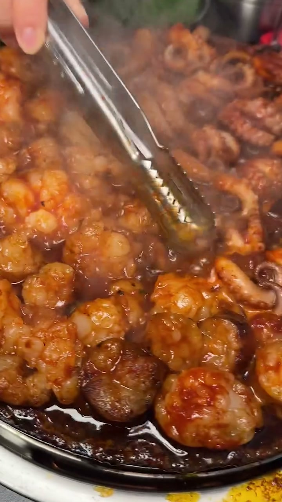
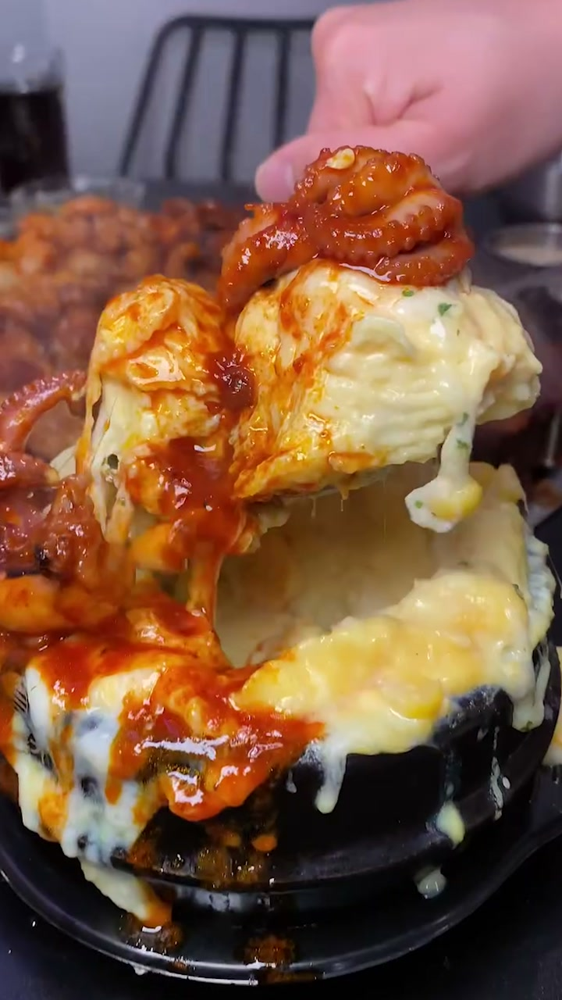

🎬 オープニング選択1 — 開始シーンを選んでください
以下の2つのうち1つを選んで動画の最初のシーンとして使用してください。
フック1
🧀 チーズコーン+チュクミ
チュクミにコーンチーズを一度に注ぎ込むのがポイント。
フック2

🧀 チーズコーンを持ち上げる
スプーン2本でチーズコーンを上に引き伸ばすイメージ。
솥고집 明洞店
サムギョプサル専門店
📌 必須ハッシュタグ
📋 솥고집 撮影ガイドライン
セット3 チュクミサムギョプ+チーズコーン
以下の順序とアングルを参考に撮影してください。自然なリアクションと自分のスタイルを活かすことが最も重要です。
以下の2つのうち1つを選んで動画の最初のシーンとして使用してください。
🧀 チーズコーン+チュクミ
チュクミにコーンチーズを一度に注ぎ込むのがポイント。
🧀 チーズコーンを持ち上げる
スプーン2本でチーズコーンを上に引き伸ばすイメージ。
撮影前に以下の動画を参考にしてください。構成と流れを把握した後、自分のスタイルで撮影してください。
솥고집 チュクミサムギョプ 参考動画
以下のメニューを動画に一つずつ収めてください。
参考動画を参考に、以下の11シーンすべてを撮影してください。

01オープニングチュクミにコーンチーズを一度に注ぎ込むのがポイント。
 02クローズアップ
02クローズアップスプーン2本でチーズコーンを持ち上げる近接クローズアップ。伸びるチーズの糸がポイント。
 03セッティング
03セッティング
04クライマックスメニューが一目でわかるよう美味しそうに撮影する。
 05クローズアップ
05クローズアップ完成したチュクミをトングでいっぱいつかみ上げるクローズアップ。
 06レファレンス
06レファレンスチュクミ+サムギョプサル+チーズを一緒に持ち上げる。チーズがたっぷり伸びるように。

07食事シーンセリ+包み野菜+チーズ+サムギョプサル+チュクミでチーズ包みを作って食べるシーン。
 08サイドメニュー
08サイドメニューチャーハンを半分に折ってから開くシーン。チーズチャーハンがよく見えるように。
 09レファレンス
09レファレンスチーズチャーハンを大きくすくってチーズが伸びる様子を見せる。
 10クローズアップ
10クローズアップ置いた瞬間にふわふわと茶碗蒸しが揺れるように、またはスプーンで上部を叩いてプリンのように見せる。

11フィナーレ茶碗蒸しを大きくすくって上にチュクミを乗せて食べる。